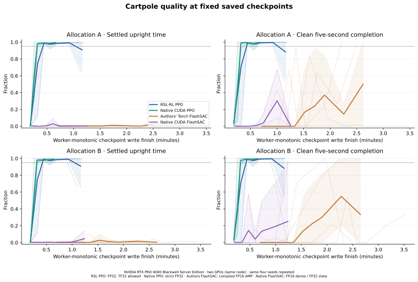
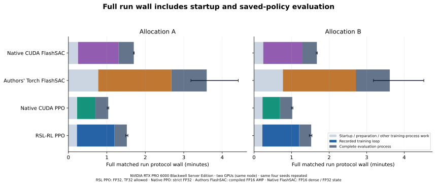
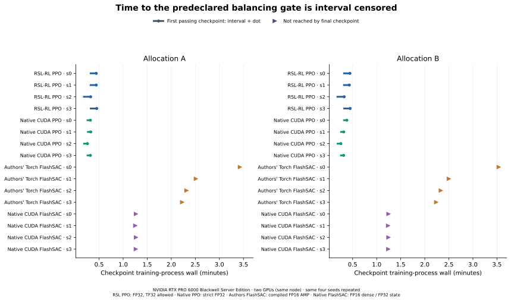

Reproducible learning experiment · 25 October 2026
Stock RSL-RL PPO and the FlashSAC authors' implementation versus native CUDA backends, on the same Isaac Lab MDP and two distinct NVIDIA RTX PRO 6000 Blackwell Server Edition allocations.
Compared with stock RSL-RL PPO, native CUDA PPO used 40.7% less time on allocation A (4/4 matched runs faster) and 43.5% less time on allocation B (4/4 matched runs faster) to execute the full training process. Percentages use median paired time ratios.
For PPO on each allocation, 4/4 native runs and 3/4 reference runs passed the balancing gate at 400 iterations; 3/4 native and 3/4 reference runs passed at both 300 and 400 iterations.
Compared with the authors’ Torch FlashSAC, native CUDA FlashSAC used 47.5% less time on allocation A (4/4 matched runs faster) and 48.3% less time on allocation B (4/4 matched runs faster) to execute the full training process. Percentages use median paired time ratios.
Neither FlashSAC implementation met the balancing gate at any saved checkpoint on either allocation. Lower execution time therefore does not demonstrate faster successful learning.
Timing alone does not establish learning quality: the table below retains every seed's balancing and survival results. These are two hardware allocations with four repeated seeds each, not a statistical significance or noninferiority study.
32 fresh training processes, 1,024 environments, 16 control steps per iteration and 400 iterations: 6,553,600 transitions per run. Every saved policy is evaluated at 0, 50, 100, 150, 200, 300 and 400 iterations on the same 128 deterministic initial states. Recipes are serial within each allocation, with Williams-balanced position and immediate predecessors within seed blocks. Cross-block transitions and compile-cache histories are not balanced.
The stock task ends at cart bounds or five seconds; a spinning pole can survive. The predeclared quality gate requires at least 95% clean time-limit completion and 95% upright time after a one-second settling period, with |wrapped pole angle| <0.2 rad. Early failures contribute zero thereafter. Full five-second upright time, all failures and active-step angle RMS are also reported.
| Allocation | Recipe | Final gate | Gate at 300 & 400 | Settled upright | Full upright | Clean timeout | Angle RMS (rad) | Return |
|---|---|---|---|---|---|---|---|---|
| A | RSL-RL PPO | 3/4 | 3/4 | 90.8% | 86.4% | 88.3% | 0.145 | 4.479 |
| A | Native CUDA PPO | 4/4 | 3/4 | 99.4% | 93.2% | 99.6% | 0.101 | 4.907 |
| A | Authors' Torch FlashSAC | 0/4 | 0/4 | 3.5% | 5.6% | 50.0% | 1.571 | -7.115 |
| A | Native CUDA FlashSAC | 0/4 | 0/4 | 0.3% | 1.3% | 0.2% | 1.733 | -2.027 |
| B | RSL-RL PPO | 3/4 | 3/4 | 90.8% | 86.4% | 88.3% | 0.145 | 4.479 |
| B | Native CUDA PPO | 4/4 | 3/4 | 99.0% | 92.3% | 99.6% | 0.107 | 4.901 |
| B | Authors' Torch FlashSAC | 0/4 | 0/4 | 0.3% | 1.7% | 33.4% | 1.962 | -7.059 |
| B | Native CUDA FlashSAC | 0/4 | 0/4 | 4.6% | 8.8% | 25.2% | 1.354 | -4.595 |
Percentages and scalar metrics here are four-seed means; the per-seed table and learning curves retain individual outcomes. Angle RMS uses active first-episode steps and must be read with full-budget upright time and survival.



| Allocation | Algorithm | Scope | Native lower | Median ratio | Observed range | Every seed ratio |
|---|---|---|---|---|---|---|
| A | ppo | training loop | 4/4 | 0.4973 | 0.4477–0.5137 | s0: 0.5110, s1: 0.5137, s2: 0.4477, s3: 0.4836 |
| A | ppo | training process | 4/4 | 0.5927 | 0.5515–0.6145 | s0: 0.6059, s1: 0.6145, s2: 0.5515, s3: 0.5794 |
| A | ppo | end to end | 4/4 | 0.6857 | 0.6551–0.7010 | s0: 0.7010, s1: 0.7009, s2: 0.6551, s3: 0.6704 |
| A | flashsac | training loop | 4/4 | 0.6176 | 0.3890–0.6977 | s0: 0.3890, s1: 0.5815, s2: 0.6537, s3: 0.6977 |
| A | flashsac | training process | 4/4 | 0.5251 | 0.3732–0.5719 | s0: 0.3732, s1: 0.5015, s2: 0.5487, s3: 0.5719 |
| A | flashsac | end to end | 4/4 | 0.5011 | 0.3833–0.5369 | s0: 0.3833, s1: 0.4866, s2: 0.5156, s3: 0.5369 |
| B | ppo | training loop | 4/4 | 0.4646 | 0.4425–0.5092 | s0: 0.4707, s1: 0.5092, s2: 0.4425, s3: 0.4585 |
| B | ppo | training process | 4/4 | 0.5645 | 0.5457–0.6128 | s0: 0.5694, s1: 0.6128, s2: 0.5457, s3: 0.5597 |
| B | ppo | end to end | 4/4 | 0.6641 | 0.6451–0.7043 | s0: 0.6664, s1: 0.7043, s2: 0.6451, s3: 0.6619 |
| B | flashsac | training loop | 4/4 | 0.6046 | 0.3675–0.6721 | s0: 0.3675, s1: 0.5745, s2: 0.6348, s3: 0.6721 |
| B | flashsac | training process | 4/4 | 0.5166 | 0.3560–0.5576 | s0: 0.3560, s1: 0.4969, s2: 0.5362, s3: 0.5576 |
| B | flashsac | end to end | 4/4 | 0.4936 | 0.3731–0.5269 | s0: 0.3731, s1: 0.4752, s2: 0.5120, s3: 0.5269 |
A ratio below 1 means less wall time. The descriptive consistency criterion requires all four full-training-process ratios below 1 on each allocation. A miss remains a valid result; there is no minimum percentage target or publication filter.
| Allocation | Recipe | Seed | Final gate | Settled upright | Full upright | Clean timeout | Angle RMS | Training process (s) | Train + eval (s) | Completed/attempted (skips) |
|---|---|---|---|---|---|---|---|---|---|---|
| A | RSL-RL PPO | 0 | yes | 99.82% | 92.91% | 100.00% | 0.106 | 70.49 | 89.51 | actor: 8000/8000 (0), critic: 8000/8000 (0), temperature: 0/0 (0) |
| A | RSL-RL PPO | 1 | no | 65.04% | 66.25% | 53.91% | 0.265 | 70.21 | 89.86 | actor: 8000/8000 (0), critic: 8000/8000 (0), temperature: 0/0 (0) |
| A | RSL-RL PPO | 2 | yes | 99.97% | 93.25% | 100.00% | 0.108 | 73.60 | 92.35 | actor: 8000/8000 (0), critic: 8000/8000 (0), temperature: 0/0 (0) |
| A | RSL-RL PPO | 3 | yes | 98.39% | 93.06% | 99.22% | 0.103 | 73.32 | 92.86 | actor: 8000/8000 (0), critic: 8000/8000 (0), temperature: 0/0 (0) |
| A | Native CUDA PPO | 0 | yes | 99.90% | 92.88% | 100.00% | 0.104 | 42.71 | 62.75 | actor: 8000/8000 (0), critic: 8000/8000 (0), temperature: 0/0 (0) |
| A | Native CUDA PPO | 1 | yes | 98.47% | 91.65% | 99.22% | 0.107 | 43.14 | 62.98 | actor: 8000/8000 (0), critic: 8000/8000 (0), temperature: 0/0 (0) |
| A | Native CUDA PPO | 2 | yes | 100.00% | 93.43% | 100.00% | 0.104 | 40.59 | 60.50 | actor: 8000/8000 (0), critic: 8000/8000 (0), temperature: 0/0 (0) |
| A | Native CUDA PPO | 3 | yes | 99.22% | 94.90% | 99.22% | 0.090 | 42.49 | 62.26 | actor: 8000/8000 (0), critic: 8000/8000 (0), temperature: 0/0 (0) |
| A | Authors' Torch FlashSAC | 0 | no | 12.74% | 16.54% | 0.00% | 0.574 | 209.42 | 265.05 | actor: 6303/6303 (0), critic: 12603/12606 (3), temperature: 6303/6303 (0) |
| A | Authors' Torch FlashSAC | 1 | no | 1.05% | 2.90% | 100.00% | 1.961 | 154.10 | 208.63 | actor: 6303/6303 (0), critic: 12604/12606 (2), temperature: 6303/6303 (0) |
| A | Authors' Torch FlashSAC | 2 | no | 0.00% | 0.76% | 0.00% | 1.817 | 142.56 | 198.47 | actor: 6303/6303 (0), critic: 12603/12606 (3), temperature: 6303/6303 (0) |
| A | Authors' Torch FlashSAC | 3 | no | 0.33% | 2.38% | 100.00% | 1.933 | 136.80 | 191.17 | actor: 6303/6303 (0), critic: 12603/12606 (3), temperature: 6303/6303 (0) |
| A | Native CUDA FlashSAC | 0 | no | 1.06% | 2.48% | 0.00% | 1.616 | 78.15 | 101.59 | actor: 6303/6303 (0), critic: 12606/12606 (0), temperature: 6303/6303 (0) |
| A | Native CUDA FlashSAC | 1 | no | 0.07% | 0.91% | 0.78% | 1.789 | 77.28 | 101.52 | actor: 6303/6303 (0), critic: 12606/12606 (0), temperature: 6303/6303 (0) |
| A | Native CUDA FlashSAC | 2 | no | 0.00% | 1.28% | 0.00% | 1.651 | 78.22 | 102.33 | actor: 6303/6303 (0), critic: 12606/12606 (0), temperature: 6303/6303 (0) |
| A | Native CUDA FlashSAC | 3 | no | 0.00% | 0.66% | 0.00% | 1.875 | 78.23 | 102.64 | actor: 6303/6303 (0), critic: 12606/12606 (0), temperature: 6303/6303 (0) |
| B | RSL-RL PPO | 0 | yes | 99.82% | 92.91% | 100.00% | 0.106 | 73.03 | 92.20 | actor: 8000/8000 (0), critic: 8000/8000 (0), temperature: 0/0 (0) |
| B | RSL-RL PPO | 1 | no | 65.04% | 66.25% | 53.91% | 0.265 | 68.47 | 88.31 | actor: 8000/8000 (0), critic: 8000/8000 (0), temperature: 0/0 (0) |
| B | RSL-RL PPO | 2 | yes | 99.97% | 93.25% | 100.00% | 0.108 | 73.71 | 92.61 | actor: 8000/8000 (0), critic: 8000/8000 (0), temperature: 0/0 (0) |
| B | RSL-RL PPO | 3 | yes | 98.39% | 93.06% | 99.22% | 0.103 | 73.29 | 92.32 | actor: 8000/8000 (0), critic: 8000/8000 (0), temperature: 0/0 (0) |
| B | Native CUDA PPO | 0 | yes | 96.86% | 89.82% | 99.22% | 0.117 | 41.58 | 61.44 | actor: 8000/8000 (0), critic: 8000/8000 (0), temperature: 0/0 (0) |
| B | Native CUDA PPO | 1 | yes | 99.74% | 93.37% | 100.00% | 0.102 | 41.96 | 62.20 | actor: 8000/8000 (0), critic: 8000/8000 (0), temperature: 0/0 (0) |
| B | Native CUDA PPO | 2 | yes | 100.00% | 93.11% | 100.00% | 0.108 | 40.23 | 59.74 | actor: 8000/8000 (0), critic: 8000/8000 (0), temperature: 0/0 (0) |
| B | Native CUDA PPO | 3 | yes | 99.22% | 92.95% | 99.22% | 0.101 | 41.02 | 61.11 | actor: 8000/8000 (0), critic: 8000/8000 (0), temperature: 0/0 (0) |
| B | Authors' Torch FlashSAC | 0 | no | 0.51% | 2.43% | 33.59% | 2.019 | 216.30 | 271.40 | actor: 6303/6303 (0), critic: 12604/12606 (2), temperature: 6303/6303 (0) |
| B | Authors' Torch FlashSAC | 1 | no | 0.00% | 0.68% | 0.00% | 1.876 | 153.74 | 209.02 | actor: 6303/6303 (0), critic: 12603/12606 (3), temperature: 6303/6303 (0) |
| B | Authors' Torch FlashSAC | 2 | no | 0.00% | 0.66% | 0.00% | 1.856 | 143.27 | 196.51 | actor: 6303/6303 (0), critic: 12603/12606 (3), temperature: 6303/6303 (0) |
| B | Authors' Torch FlashSAC | 3 | no | 0.59% | 2.97% | 100.00% | 2.097 | 137.53 | 190.84 | actor: 6303/6303 (0), critic: 12603/12606 (3), temperature: 6303/6303 (0) |
| B | Native CUDA FlashSAC | 0 | no | 14.32% | 20.58% | 4.69% | 0.922 | 77.00 | 101.25 | actor: 6303/6303 (0), critic: 12606/12606 (0), temperature: 6303/6303 (0) |
| B | Native CUDA FlashSAC | 1 | no | 0.00% | 0.71% | 0.00% | 1.747 | 76.39 | 99.33 | actor: 6303/6303 (0), critic: 12606/12606 (0), temperature: 6303/6303 (0) |
| B | Native CUDA FlashSAC | 2 | no | 0.75% | 3.34% | 96.09% | 2.099 | 76.83 | 100.60 | actor: 6303/6303 (0), critic: 12606/12606 (0), temperature: 6303/6303 (0) |
| B | Native CUDA FlashSAC | 3 | no | 3.46% | 10.50% | 0.00% | 0.649 | 76.69 | 100.56 | actor: 6303/6303 (0), critic: 12606/12606 (0), temperature: 6303/6303 (0) |
| Allocation | Recipe | Environment | Learner construction | Prepare | Checkpoints | Metrics IO | Training loop | Training process | Evaluation process |
|---|---|---|---|---|---|---|---|---|---|
| A | RSL-RL PPO | 6.66 | 0.48 | 0.00 | 0.02 | 0.05 | 58.54 | 71.91 | 19.24 |
| A | Native CUDA PPO | 6.67 | 0.32 | 0.21 | 0.02 | 0.05 | 28.59 | 42.23 | 19.89 |
| A | Authors' Torch FlashSAC | 6.68 | 31.93 | 0.00 | 0.51 | 0.05 | 114.17 | 160.72 | 55.11 |
| A | Native CUDA FlashSAC | 6.73 | 1.12 | 0.47 | 0.68 | 0.05 | 62.93 | 77.97 | 24.05 |
| B | RSL-RL PPO | 6.66 | 0.49 | 0.00 | 0.02 | 0.05 | 58.76 | 72.13 | 19.23 |
| B | Native CUDA PPO | 6.66 | 0.32 | 0.21 | 0.02 | 0.05 | 27.57 | 41.20 | 19.92 |
| B | Authors' Torch FlashSAC | 6.58 | 31.48 | 0.00 | 0.52 | 0.05 | 116.58 | 162.71 | 54.23 |
| B | Native CUDA FlashSAC | 6.57 | 1.08 | 0.46 | 0.64 | 0.05 | 61.94 | 76.73 | 23.71 |
| Allocation | Worker processes | First smoke through final evaluation (s) | Smoke command (s) | Production command (s) | Between commands (s) | Smoke workers (s) | Production workers (s) |
|---|---|---|---|---|---|---|---|
| A | 40 | 2262.15 | 377.27 | 1884.88 | 0.00 | 376.94 | 1884.46 |
| B | 40 | 2295.66 | 415.80 | 1879.85 | 0.00 | 415.48 | 1879.44 |
The interval uses immutable host Unix command-receipt timestamps from smoke start through production-command exit, including all 40 worker processes and controller/gap overhead. Worker subtotals are nested, not additional costs. Installation, uploads, artifact retrieval and canonical fixture generation are excluded. Fixture generation can precondition allocation A's simulator caches; B receives the copied fixture. These are chronological protocol costs, not matched cold-start trials.
The Isaac Lab lock file is unchanged, with one explicitly preregistered runtime overlay: numpy==2.3.5 installed with --no-deps after frozen synchronization, uniformly for both allocations and every recipe. This resolves bootstrap dependency constraints; the installed runtime is not identical to the lock's NumPy selection. No fixture or learner ran before this amendment.
Isaac Lab · RoboLearn · Pristine FlashSAC · Derived audited data · Exact frozen protocol
FlashSAC: Donghu Kim and coauthors, Fast and Stable Off-Policy Reinforcement Learning for High-Dimensional Robot Control, with credit to Holiday Robotics and its original implementation. PPO: John Schulman, Filip Wolski, Prafulla Dhariwal, Alec Radford and Oleg Klimov, Proximal Policy Optimization Algorithms. RSL-RL and Isaac Lab retain their respective authorship and licenses.